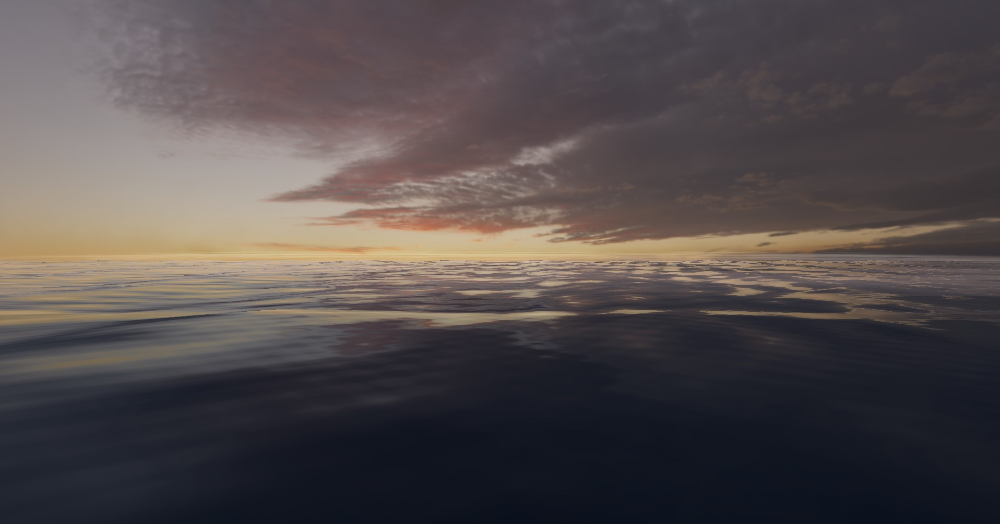
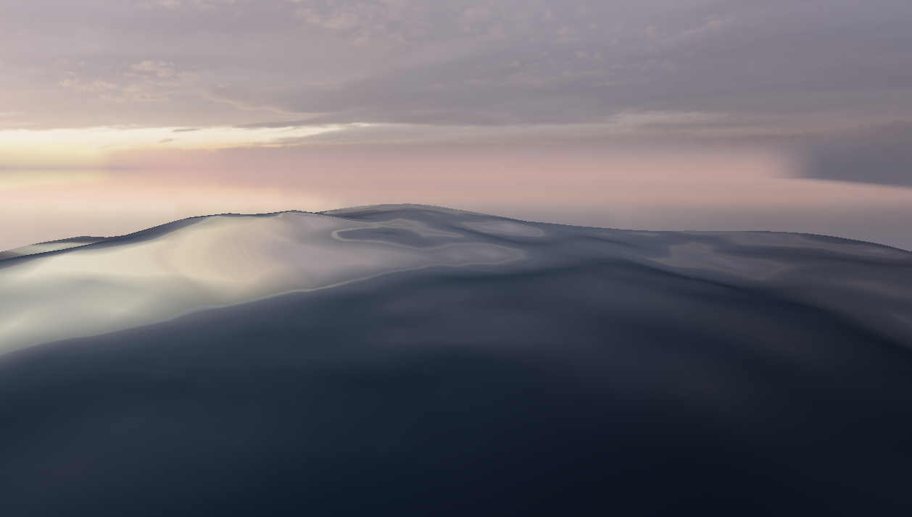
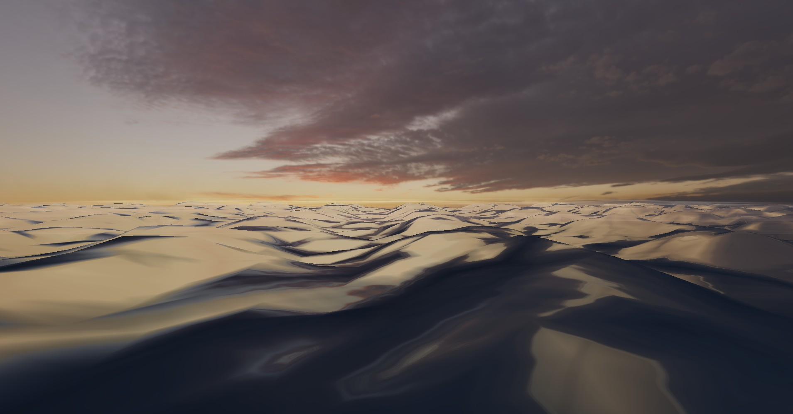
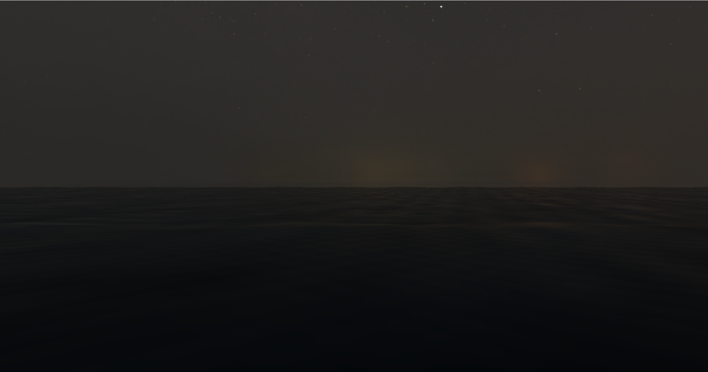
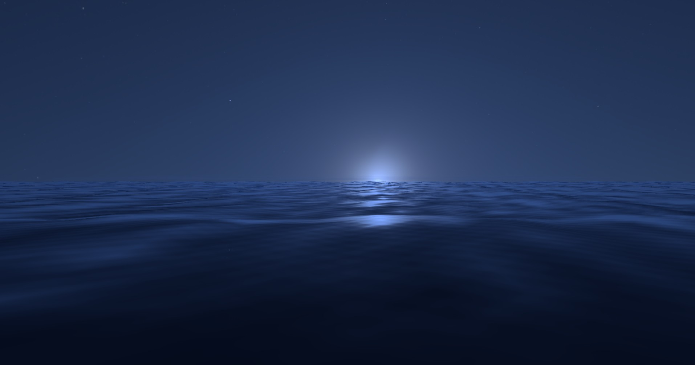
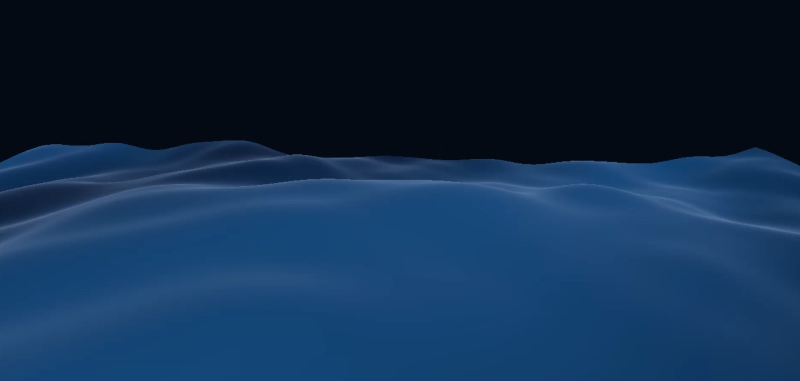
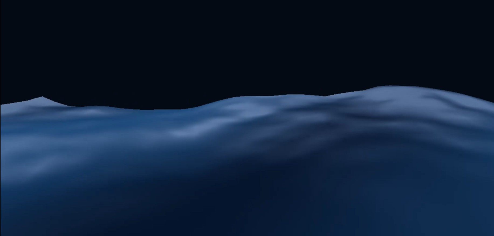
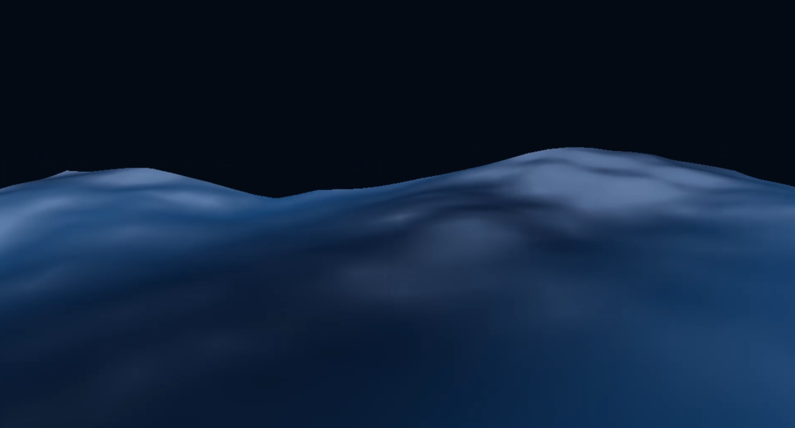
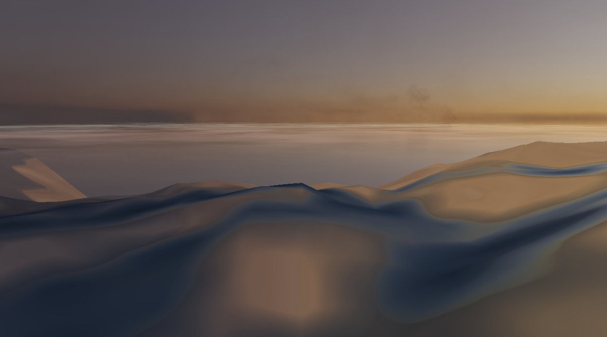
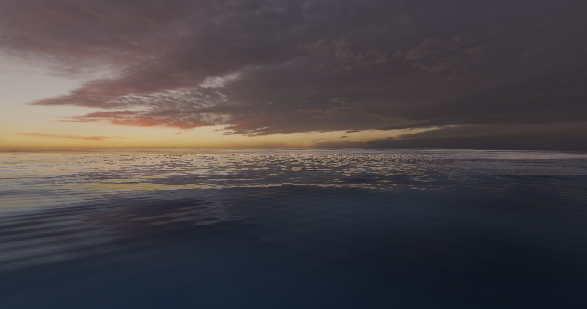

Tidal Weave is a real-time ocean surface simulation and rendering project organized
around the same core goals laid out in our proposal: physically motivated ocean
geometry, view-dependent water appearance, environment-driven lighting, and a
presentation-ready interactive renderer. Our final system centers on a spectral ocean
formulation inspired by Tessendorf, implemented as an evolving frequency-domain height
field whose inverse Fast Fourier Transform drives a large ocean patch in real time. On
top of that simulation layer, we built a water shader that combines slope-derived
normals, Fresnel-weighted environment reflection, procedural micro-detail, and
atmosphere-aware scene lighting so that the surface reads as ocean water rather than as
a generic reflective plane.
The project evolved through several concrete stages. We began with a bridge-stage CPU
wave prototype to validate rendering, mesh generation, and update logic. We then
replaced the brute-force wave accumulation step with an FFT-based pipeline, computed
slope fields and normals from the spectral data, separated visible mesh size from
wave-tile size so that the ocean could span hundreds of meters without blowing up the
wavelength scale, and added layered breakup to reduce repetition at large patch sizes.
Finally, we integrated HDR sky rendering, environment reflection, and a stylized
single-scattering fog pass to improve horizon depth and lighting coherence. The result
is a real-time renderer that achieves the proposal’s central visual target: broad
swells, medium-scale directional structure, high-frequency sparkle, and an ocean surface
whose geometry and optics reinforce one another.

A sunset HDRI lit calm ocean scene, with a light animated fog over the horizon.
Technical Approach
Geometry and Spectral Surface Construction
The numerical backbone of the project is the spectral representation of the water
surface. Following Tessendorf’s framework, we treat the ocean as a height field over a
horizontal domain rather than as a full volumetric fluid. The surface is therefore
represented by a time-dependent function \(h(\mathbf{x}, t)\) reconstructed from Fourier
modes:
Here \(\mathbf{k} = (k_x, k_z)\) is a horizontal wavevector and each complex coefficient
\(\tilde{h}(\mathbf{k}, t)\) describes the amplitude and phase of one spectral mode. The
frequency-domain representation is useful because it separates the large problem of
“draw believable ocean waves” into smaller numerical tasks: initialize a physically
plausible spectrum, evolve that spectrum over time, and then reconstruct the spatial
surface with an inverse FFT.
We initialize the wave amplitudes from the Phillips spectrum, which biases the energy
toward wind-aligned waves while damping unreasonably small wavelengths:
\[
P_h(\mathbf{k}) =
A\,\frac{e^{-1/(kL)^2}}{k^4}\,\left|\hat{\mathbf{k}}\cdot\hat{\mathbf{w}}\right|^2
e^{-k^2\ell^2},
\qquad L = \frac{V^2}{g}.
\]
In this expression, \(A\) controls overall amplitude, \(V\) is wind speed,
\(\hat{\mathbf{w}}\) is wind direction, \(g\) is gravitational acceleration, and
\(\ell\) is a small-wave damping parameter. The spectrum is then sampled with Gaussian
random variables so that each Fourier mode begins with a random but statistically
structured amplitude:
The complex-conjugate pairing is important because it guarantees that the final spatial
height field is real-valued after reconstruction. In code, this meant storing the
initial complex amplitudes \(h_0\), computing the time-dependent coefficients at each
frame, and feeding those coefficients into an inverse two-dimensional FFT. Our
implementation uses a radix-2 one-dimensional FFT and applies it along both axes to
produce an inverse FFT over the spectral grid. The runtime improvement here is
substantial: the original brute-force bridge-stage approach scaled quadratically in the
number of modes being accumulated, while the FFT-based reconstruction reduces the
dominant spectral reconstruction cost to \(O(N^2 \log N)\) on an \(N \times N\) grid.
A second important engineering step was decoupling the visible ocean mesh size from the
wave tile size. The final renderer uses a large visible patch so that the ocean extends
convincingly toward the horizon, but the repeating spectral wave tile remains much
smaller. In practical terms, we keep a large mesh size for world-space coverage while
sampling the spectral height field with a smaller \(\texttt{wavePatchSize}\). This
prevents the wavelengths from inflating when the visible ocean patch is enlarged.
We also introduced layered sampling to reduce repetition. Instead of sampling only one
periodic realization of the spectral field, the final implementation blends several
rotated, offset, and rescaled samples of the same field. At higher wave-activity
settings these extra layers become more influential, which helps break up tiling
patterns across the large patch. This is still a periodic ocean model, but the
additional transformed samples and low-frequency modulation make the repetition
substantially less obvious.
Slope information is derived directly from the spectral representation rather than
approximated solely in screen space. If
then in the Fourier domain each slope component is just the height coefficient
multiplied by \(i\mathbf{k}\). We therefore reconstruct both the height field and the
slope fields \(\partial h / \partial x\) and \(\partial h / \partial z\) with inverse
FFTs, then sample those fields over the mesh. The final surface normal takes the
familiar form
This normal is what couples the simulation to the shader. Without it, the renderer would
show animated displacement but not the correct orientation-dependent water response.

Early FFT geometry.
Surface Shading and Water Appearance
The second major production track is optical rather than geometric. A moving height
field does not automatically look like water. The surface only reads correctly once the
changing normal field is connected to a view-dependent reflection model, a controlled
body color, and fine-scale detail that enriches the image without replacing the
simulation.
At the fragment level, the first step is to compute the reflected view direction from
the surface normal. In standard vector form,
where \(\mathbf{v}\) is the incident view direction and \(\mathbf{n}\) is the surface
normal. This reflected direction is mapped into an equirectangular HDR environment
texture, providing the reflected sky contribution. We also implemented explicit
orientation controls for the HDR environment, including horizontal rotation and pitch,
so that the reflected sky and the visible sky pass can be aligned with the camera
composition.
The water’s reflectivity is modeled with a practical Fresnel approximation. Rather than
using a constant reflectance, we evaluate a view-dependent term using Schlick’s formula:
where \(F_0\) is the base reflectance at normal incidence. This ensures that the surface
becomes much more reflective at grazing angles, which is one of the strongest visual
cues that the object is water rather than plastic or polished metal.
The final water color is assembled from several terms. Broadly, the fragment shader
computes an ambient component, a diffuse water-body component, a Fresnel-weighted
reflected environment component, and sharp specular and micro-specular highlights. In
schematic form, the structure is
In our implementation, the body color is not a constant flat blue. Instead, it is
modulated by several broad procedural masks so that the surface exhibits large-scale
variation in tone, even when the camera is not looking directly into the reflection
direction. This helps the ocean retain readable structure in darker regions and keeps
the image from collapsing into a single flat color.
The final shader also adds multiple layers of procedural detail. We perturb the
FFT-derived normal with world-space ripple patterns at several scales, each drifting in
a different direction over time. These layers do not replace the large wave geometry
produced by the FFT; instead they inject the medium- and high-frequency roughness needed
for realistic sparkle. In the final hierarchy of the surface, the FFT supplies the broad
swells and the main directional wave structure, additional vertex displacement
contributes medium-scale geometric variation, and procedural detail normals provide the
finest optical microstructure and the point-like sparkle on the water.
This layered approach was especially important at large patch sizes. Without added
detail normals and micro-specular response, the ocean became too smooth and fabric-like.
With too much detail, however, the repeated patterns became obvious. The final shader
balances these layers so that low wave-intensity shots retain a clean cinematic surface
while high wave-intensity shots still exhibit enough breakup to avoid reading as a
repeated sine-wave sheet.

A high intensity wave cycle, demonstrating the variation in surface displacement.
Environment Mapping, HDR Presentation, and Scene Composition
Our proposal emphasized that the renderer should not be presented as a single shader
exercise floating over a black void. We therefore treated environment rendering as part
of the core final system rather than as a purely decorative addition. Two HDR panoramas
are used as environment presets: a sunset sky and a night sky. The renderer draws a
separate sky pass and then reuses the same HDR texture as the reflection source for the
ocean surface.
The equirectangular lookup itself is geometric. Given a normalized direction
\(\mathbf{d} = (d_x, d_y, d_z)\), the panorama coordinates are computed by
\[
u = \frac{1}{2\pi}\operatorname{atan2}(-d_z, d_x) + \frac{1}{2} + \Delta u,
\qquad
v = \frac{1}{\pi}\arccos(d_y),
\]
with additional rotation and pitch controls used to align the sky with the final shot.
This mathematical control over the environment map ended up being just as important as
the raw HDR asset itself: an HDR that is misaligned or overexposed can make the water
look wrong even if the surface simulation is technically correct.
The environment stage also motivated several practical rendering decisions. The night
scene, for example, needed a colder blue-tinted light story rather than a neutral or
black one, so we tuned night exposure, water color, and fog-scattering color in tandem.
The sunset scene, by contrast, leaned more heavily on warm horizon light and
high-contrast grazing-angle highlights. This led to a more faithful realization of the
proposal’s visual direction: the ocean is presented as a scene with lighting,
atmosphere, and camera composition, not just as an isolated mesh.


Recommended insert: comparison showing why HDR environment lighting and cooler night
tinting improved the scene.
Fog and Atmospheric Scattering
The fog stage was treated as a lightweight participating-media approximation rather than
as simple fixed-function distance fog. The implementation goal was not a full volumetric
multiple-scattering solver, but rather a practical atmospheric model that softens the
horizon, integrates the ocean into the environment, and responds to light direction in a
convincing way.
Structurally, the fog is implemented in a separate pass. This is important: by keeping
the atmosphere outside the ocean shader, the renderer can treat fog as a scene volume
rather than as a tint painted directly onto the water surface. Each fog layer is
represented as a shallow box volume placed above the water. Within the fog fragment
shader, the density is shaped by a near-to-far distance fade so the effect grows with
depth into the scene, by front and side fades so the fog does not read as a hard-edged
slab, by a vertical falloff that keeps most of the density close to the waterline, and
by layered procedural noise that breaks the volume into softer natural patches instead
of a uniform blob.
In analytical terms, the fog alpha follows the standard transmittance-inspired form
\[
\alpha = 1 - e^{-\rho},
\]
where \(\rho\) is an effective density assembled from distance falloff, local volume
shaping, and procedural modulation. This provides a stable, efficient way to turn a
scalar density field into an opacity response without resorting to expensive volumetric
ray marching.
The lighting term is a stylized single-scattering approximation. We compute a view
vector, a light vector, and a forward-scattering response based on their alignment. In
simplified form,
where \(p\) is an exponent controlling how strongly the fog brightens when the camera
looks toward the light. This is the step that creates the visible horizon glow. The
final fog color then combines a base fog tint, ambient sky contribution, water bounce
contribution, and the forward-scattering term. In other words, our atmosphere is not
just “blend toward blue with depth”; it is a direction-aware airlight model layered over
procedural fog volumes.
This approach gave us a good compromise between realism and runtime simplicity. The fog
does not attempt to model full multi-scattering, shadowed volumetric transport, or dense
three-dimensional fluid motion. Instead, it gives the scene a mathematically
interpretable atmospheric layer that is cheap enough to run in real time and
artistically flexible enough to support both sunset and night presets. It also directly
matches one of the proposal’s recurring visual goals: a softened distant horizon rather
than a hard cutoff where the ocean mesh simply ends.
Runtime Controls, Debugging, and Scene Tuning
A final piece of the technical approach was runtime control. The proposal emphasized
that the renderer should be interactively tunable, and our final system does expose
several important controls in practice: wave activity, HDR rotation, HDR pitch, and
environment exposure. These controls mattered because the ocean’s appearance was
sensitive not only to the underlying simulation but also to framing, sky alignment, and
lighting balance. In this sense the control layer was not cosmetic; it was essential to
debugging and presentation.
During development, we repeatedly used these controls to diagnose problems that were not
obvious from the code alone: repeated wave structure at large scales, misaligned HDR
horizons, too-dark night lighting, and fog layers that sat too far back from the water.
The final report therefore follows the same logic as the proposal: geometry, optics,
atmosphere, and presentation must be treated as one integrated renderer rather than as
separate disconnected effects.
Problems Encountered and Lessons Learned
Our first major obstacle was computational cost. The earliest bridge-stage version
directly accumulated many wave contributions on the CPU and updated the mesh each frame.
That approach was useful for validating the render path but far too slow for a
convincing interactive ocean. Moving to the FFT pipeline was therefore not just an
optimization; it was the step that made the full project feasible.

CPU-computed bridge-stage update.

FFT-based update after the spectral reconstruction pipeline was integrated.
A comparison between the slow CPU accumulation stage and the later FFT-based update.
A second obstacle was scale. Small ocean patches were visually workable in a technical
sense, but they looked wrong: the wave field repeated too aggressively, the horizon
ended too abruptly, and the patch boundaries entered the shot. Enlarging the visible
ocean patch solved the framing problem but initially caused the wavelengths to inflate
as well. Separating visible patch size from wave-tile size and then layering transformed
samples of the spectral field was the solution that made the large final patch possible.
The third recurring lesson was that believable water is always a coupled
geometry-and-optics problem. The simulation alone was not enough, and the shader alone
was not enough. The system only began to look convincing once the surface normal field,
reflection response, environment map, and atmospheric depth all reinforced the same wave
structure.
Results
The final renderer successfully hits the main target described in the proposal: a
real-time open-ocean surface whose appearance is driven by both structured wave motion
and view-dependent optical response. The transition from a bridge-stage CPU prototype to
a spectral FFT pipeline gave the ocean much stronger large-scale organization, while the
final shader stack added the view-dependent reflections, micro-detail, and atmosphere
needed to make the surface read as water.
In practical terms, the strongest results occur when the renderer is allowed to use a
broad ocean patch, moderate wave activity, environment reflection, and horizon fog
together. Low-to-medium wave activity settings create the cleanest cinematic sunset
shots, while higher wave activity demonstrates the multiscale structure of the
simulation more aggressively. The night preset benefits from a cooler blue lighting
treatment, which makes the water’s reflections and fog-scattering response feel more
coherent.
Limitations and Future Improvements
The largest remaining limitation is repetition. Because the ocean is still built from a
periodic spectral tile, repeated structure can become visible at high wave-activity
settings. The current layered sampling and procedural breakup reduce this significantly,
but the most principled future step would be to move toward a multi-band or cascaded
spectral system in which large swells, medium waves, and high-frequency ripples are
generated from separate bands rather than from one repeated field.
A second natural improvement would be foam and whitecap generation. The current project
models wave structure and optical response well, but energetic water would read even
more convincingly if crest regions produced foam masks derived from slope, curvature, or
a fold diagnostic such as a displacement Jacobian. That would also give the simulation
another physically interpretable signal rather than a purely decorative overlay.
Third, the atmospheric system could be extended from the current stylized
single-scattering model toward a denser volumetric fog treatment. This would be more
expensive, but it would support stronger depth integration, smoother water-to-air
transitions at the horizon, and more physically plausible night lighting.
Finally, the environment and reflection pipeline could be improved with better filtered
HDR sampling, roughness-aware mipmapped reflection, and more specialized day/night
environment assets. Those upgrades would matter especially at night, where the scene is
most sensitive to how the environment map, water reflection, and atmosphere combine.
The progression of the rendering pipeline is visible through these development snapshots:

An early stage of the CPU summed prototype.

An early unscaled implementation of FFT with an HDRI environmental texture, but low patch size.

An expansive scaled ocean render with an animated fog enhancement.
Final Project Video
Real-Time Spectral Ocean Surface Simulation and Rendering
References
[1] Jerry Tessendorf. Simulating Ocean Water. SIGGRAPH course notes.
[2] Toshiya Hachisuka and colleagues. A Practical Analytic Single Scattering Model for Real Time Rendering.
[3] OpenGL, GLFW, GLAD, and GLM documentation used during renderer and application development.
[4] Poly Haven HDR environment maps used as sky-lighting and reflection assets.
[5] The project proposal itself served as the organizational target for the final system, especially its division among geometry, shading, environment, and presentation planning.
Team Contributions
Ellie Ghazaleh: Geometry, shader, environmental aestheic including lighting, HDRI and fog.
Johanna Liu: Research, debugging, algorithm improvement and efficiency.
Ece Eris: Writeups and research on Tessendorf’s simulation methods, Fourier-domain ocean formulation, and water optics.